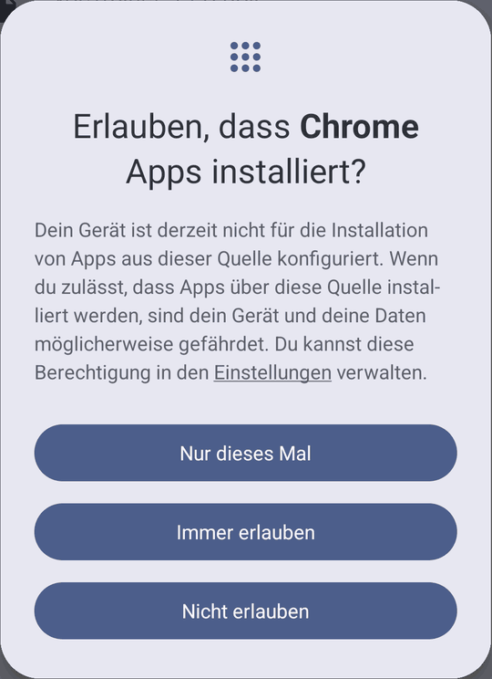

Was kann die App?
VocTrainer fragt Vokabeln in kurzen Runden ab. Am Anfang wählst du die Antwort aus Vorschlägen, später tippst du das englische Wort selbst. Jedes Wort steigt Stufe für Stufe auf, bis es gelernt ist. Wörter, die noch nicht sitzen, kommen öfter dran.
Für das Üben gibt es Punkte. Damit wächst ein Avatar (Drache, Monster oder Kämpfer). Dazu kommen Abzeichen, ein Tagesziel und eine Serie für jeden Tag, an dem du übst. Unregelmäßige Verben können extra geübt werden.
Ein Beispielbuch ist schon eingebaut, so könnt ihr die App sofort ausprobieren. Die Vokabeln für euer eigenes Buch kommen als Datei, die ihr in der App importiert.
Ist das sicher?
Warum warnt das Handy? Android warnt bei jeder App, die nicht aus dem Play Store kommt. Die Warnung sagt: „Diese Quelle kenne ich nicht.“ Sie sagt nichts darüber, was die App macht. VocTrainer ist ein kostenloses Hobbyprojekt und wird deshalb nicht über den Play Store verteilt.
Was die App nicht kann:
- Sie hat keinen Zugang zum Internet. Sie kann also nichts verschicken.
- Kein Konto, keine Anmeldung, keine Werbung, keine Käufe.
- Der Lernstand bleibt auf dem Handy. Nur wenn auf dem Handy die normale Android-Sicherung eingeschaltet ist, sichert Android ihn mit, wie bei jeder anderen App auch.
So installierst du die App
Das dauert etwa zwei Minuten. Die Meldungen sehen je nach Handy etwas anders aus.
- Herunterladen: Tippe oben auf „Herunterladen“. Der Browser fragt vielleicht, ob du die Datei wirklich laden willst. Tippe auf „Trotzdem herunterladen“ (oder ähnlich).
- Öffnen: Tippe nach dem Download auf „Öffnen“, oder öffne die Datei über die Benachrichtigung.
- Erlauben: Android fragt, ob dein Browser Apps installieren darf. Auf neueren Handys tippst du auf „Nur dieses Mal“. Auf anderen Handys tippst du auf „Einstellungen“, schaltest den Schalter für deinen Browser ein und gehst zurück.

So sieht es auf neueren Handys aus. - Installieren: Tippe auf „Installieren“.
- Prüfen lassen: Vielleicht bietet Google Play Protect an, die App zu prüfen. Das kannst du ruhig machen.
- Fertig: Tippe auf „Öffnen“. Die App heißt VocTrainer.
Danach: Wenn du den Schalter eingeschaltet hast, kannst du ihn wieder ausschalten: in den Einstellungen unter Apps → dein Browser → „Unbekannte Apps installieren“ (auf manchen Handys heißt es etwas anders). Für ein späteres Update musst du ihn kurz wieder einschalten.
Updates: Eine neue Version installierst du einfach über die alte. Lösch die App vorher nicht, sonst ist der ganze Lernstand weg.
Mit Family Link
Bei einem Kinderkonto mit Family Link darf das Kind die Erlaubnis aus Schritt 3 nicht selbst geben. Das macht ein Elternteil auf dem eigenen Handy:
- Öffne die Family-Link-App und wähle dein Kind aus.
- Gehe zu den Einstellungen für das Gerät des Kindes und schalte „Apps aus unbekannten Quellen“ ein.
- Installiert dann auf dem Handy des Kindes wie oben beschrieben.
- Danach könnt ihr die Einstellung in Family Link wieder ausschalten. Für ein Update braucht ihr sie wieder.
Vokabeln aus dem Buch
Die Datei für euer Buch speicherst du auf dem Handy. Dann: Zahnrad oben rechts → „Vokabeln verwalten“ → „Vokabeln importieren“ → Datei auswählen. Die App zeigt danach, wie viele Wörter dazugekommen sind.
Es klappt nicht?
- iPhone: Die App gibt es nur für Android.
- Samsung: Ist „Auto Blocker“ eingeschaltet, lässt das Handy keine Apps außerhalb des Play Store zu. Du findest ihn unter Einstellungen → Sicherheit und Datenschutz → Auto Blocker. Schalte ihn für die Installation kurz aus und danach wieder ein.
- Google „Erweiterter Schutz“: Damit lässt sich die App leider nicht installieren.
- Andere Fragen: Wendet euch an die Person, von der ihr den Link habt.